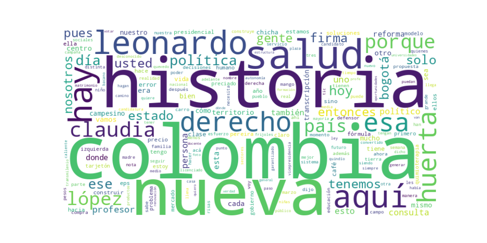

Seguidores: 16,763
Reporte de Análisis de Comunicación: Candidato Presidencial / Vicepresidencial (Claudia López - Leonardo Huerta)
Basado en corpus de publicaciones de Instagram del candidato Leonardo Huerta
El candidato emplea un estilo híbrido: combina un discurso formal y técnico cuando aborda propuestas de gobierno (conceptos como federalismo, autonomía territorial, modelo de aseguramiento en salud), con un tono cercano y coloquial al narrar experiencias personales (“comiendo Frisby”, “me caí del árbol”). Se presenta como accesible y humano, utilizando un lenguaje claro y ejemplos cotidianos para conectar con la ciudadanía. Su formación académica (profesor universitario) se evidencia en explicaciones detalladas, pero logra simplificarlas con metáforas (“el sistema de salud está podrido”) y anécdotas. La comunicación es deliberadamente emocional, buscando identificación a través de historias de esfuerzo personal y servicio.
Tono esperanzador y propositivo, con un trasfondo de crítica constructiva hacia el sistema político y social. Evita ataques personales directos, pero es contundente al señalar fallas estructurales (ej. corrupción, polarización). Transmite optimismo combativo, resaltando la posibilidad de un cambio radical mediante esfuerzo colectivo (“Colombia quiere escribir una nueva historia”). El sentimiento predominante es de urgencia reformista, matizado con calidez humana en anécdotas personales.
La estrategia de comunicación del candidato busca construir una narrativa de ruptura con el establishment, presentándolo como una alternativa válida entre los extremos políticos. Se dirige principalmente a la clase media trabajadora, a jóvenes profesionales y a sectores urbanos y rurales frustrados con la polarización y la corrupción. Utiliza un relato de origen humilde, esfuerzo académico y servicio social para ganar credibilidad. Con su discurso, busca evocar esperanza en un cambio tangible, enfatizando soluciones prácticas sobre ideologías, y posicionar su fórmula como símbolo de un “centro” propositivo y alejado de los odios. En esencia, apela a un sentimiento de renovación nacional, donde la técnica, la honestidad y la conexión emocional con la gente sean los pilares de un nuevo proyecto país.
Fin del reporte
Fecha de Análisis: 17 de mayo de 2024
Objeto: Análisis del corpus textual de los 10 videos de Instagram de mayor engagement.
El patrón de éxito se basa en una combinación poderosa de autenticidad personal elevada a propósito nacional. El candidato no vende un programa político abstracto; vende una "Nueva Historia" que se construye desde su propia biografía de esfuerzo, valores de clase media y una narrativa de transformación. El contenido más efectivo fusiona anécdotas íntimas y vulnerables (su matrimonio, sus deudas, sus sueños) con propuestas de política pública, presentándose no como un político tradicional, sino como un "profesor" y "outsider" que encarna los valores y aspiraciones del ciudadano común que trabaja duro. La fórmula es empatía narrativa + propósito colectivo claro.
Basado en el engagement, los temas que más resuenan son aquellos donde vincula una problemática tangible con una solución concreta y un principio moral: 1. Educación como Motor Ético: No es solo cobertura, es la profesión docente como vocación transformadora. Es su tema bandera personal. 2. Salud como Derecho Humano Fundamental: Lo desglosa desde la experiencia del sufrimiento ("quimioterapias negadas"), atacando el modelo de negocio y proponiendo un enfoque de derecho. 3. Dignificación del Campo y la Clase Media: Conecta la pobreza campesina con fallas de infraestructura y comercialización, y defiende a la clase media trabajadora como el corazón moral de la nación. 4. Tecnología (TIC) como Derecho Habilitante: La presenta no como un lujo, sino como un presente crucial para garantizar otros derechos (educación, salud), criticando la regulación obsoleta.
El discurso apunta a un electorado joven y de clase media aspirante, probablemente indeciso o desencantado con la política tradicional. El lenguaje es claro, evita la jerga partidista dura y enfatiza valores de esfuerzo, educación y honestidad. Habla a quienes se sienten fuera de las "estructuras", a quienes "madrugan y trabajan", y a los jóvenes digitales a quienes insta a no solo consumir redes sino a "programar". Es la audiencia del "outsider" creíble, no del militante de base.
La clave fundamental del poder de su discurso es la codificación de la política en términos de historia personal y sentido común ético. Su potencia radica en que despolitiza la política: no habla como un ideólogo, sino como un profesor, un esposo, un deudor del ICETEX que ahora busca soluciones técnicas. Lo que lo hace diferente y potente es que su biografía es su principal propuesta de gobierno. En un entorno de desconfianza, su autenticidad narrativa actúa como un atajo de credibilidad. No promete milagros, promete aplicar el esfuerzo y los valores de la clase media ("trabajar", "disciplina fiscal") a la gestión del Estado. Su mayor activo no es un eslogan, es la coherencia percibida entre su vida y su proyecto de país.
Recomendación Estratégica Final: Mantener y profundizar este eje narrativo. Cualquier desviación hacia un lenguaje partidista tradicional o ataques personales directos diluiría su diferencial único. Su marca es "El Profesor de la Nación".

Caption: Hoy participamos de #ColombiaDigitalSummit Las TIC no son el futuro, son el presente. Conectividad real para todos: aprender, crear y programar. Así garantizamos derechos y hacemos de Colombia Una Nueva Historia. 🇨🇴 . . . . #Colombia #elecciones
Likes: 112 | Comentarios: 7 | Reproducciones: 1,561
Ver en InstagramCaption: No es solo una historia… es una forma de amar a Colombia. Amor, convicción y propósito en el mismo camino. Mientras muchos hablan, aquí estamos trabajando por algo más grande que ellos. Por una Nueva Historia para Colombia 🇨🇴 . . . . #presidencia #elecciones #ElVice #amor
Likes: 452 | Comentarios: 19 | Reproducciones: 7,030
Ver en InstagramCaption: Con @claudialopezcl representamos la clase media: esa que madruga, que trabaja y que no vive del odio, sino de las oportunidades. Esa misma a la que pertenecemos. Esa es la fuerza que anhela UNA NUEVA HISTORIA para Colombia.🇨🇴 . . . . #Colombia #elecciones #bogota #presidencia
Likes: 59 | Comentarios: 5 | Reproducciones: 941
Ver en Instagram